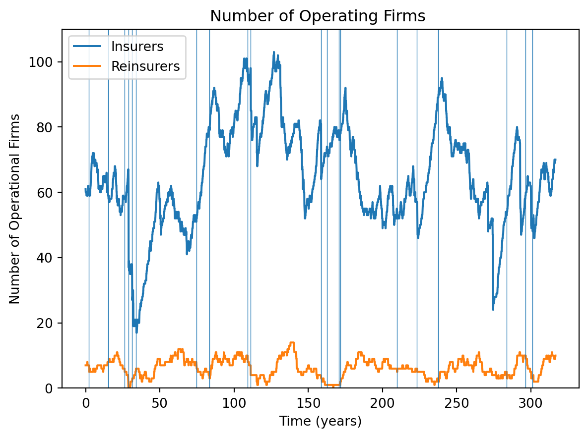
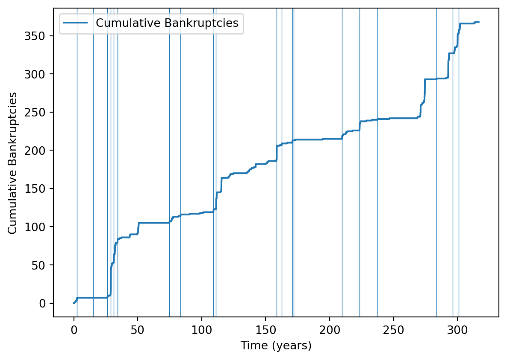
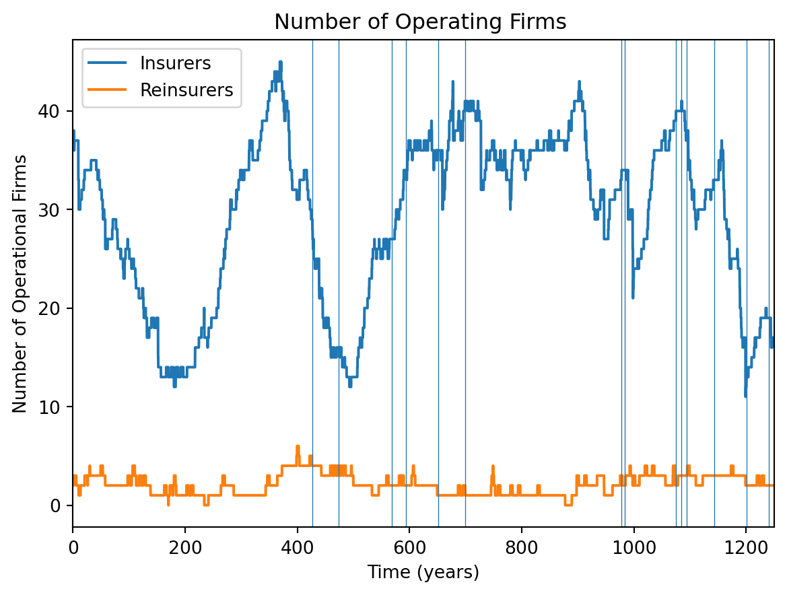
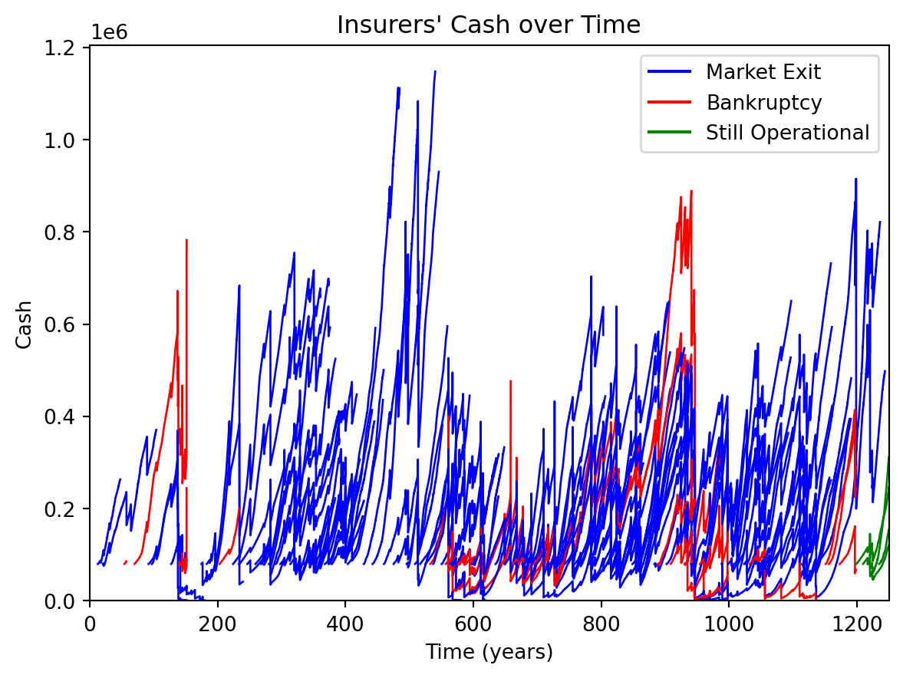

This article is my review of the 2019 paper “A simulation of the insurance industry: The problem of risk model homogeneity” by Heinrich, Sabuco, and Farmer (Heinrich et al. 2021) (released on arxiv in 2019, published in 2021). A simulation of the insurance industry would have to contain precise statements about how each part of the industry works (in code), so as someone interested in Actuarial Science this could be a valuable learning opportunity. The thesis of the paper is plausible, and it would be interesting to see how strong a simulation could be as evidence. Also it would be a good practise of my python.
The point of this article is for me to:
explain what I learned from reading the paper
explore the approximations/assumptions made by the paper and see if they seem valid
document my analysis of their code, where I try to see for myself how it works. For this I used the most recent branch from {}{github{}{}{
decide how strong as evidence this paper is towards the point it is trying to establish.
All code chunks with colored left borders are from the most recent commit to the simulation’s code, and the only alterations to that code are my comment which are preceded with ##.
Thesis of the Paper
Solvency II, regulations introduced in {}{}{year{}{}{ require that insurers hold capital that covers at minimum the 99.5 percentile losses for the coming year, and also requires that the riskmodels used to compute the 99.5 percentile loss (the Solvency Capital Requirement (SCR)) are approved by {}{}the regulator{}{}. This means that, while the SCR-computing riskmodels may be high quality, there are in practise only {}{{}a few of them (update with more recent info)}{}{, which might lead to many insurers/reinsurers making the same underestimates of risk at the same time, leading to a lot of simultaneous bankruptcies should the risk occur. {}{}does the government pay if the insurer can’t?}{}{
In this paper, the authors simulate the insurance industry with varying numbers of available risk models, so they can gauge how strong this effect is (at least for this simulation).
The Simulation
The entities in the simulation are:
Houses spread across four peril regions (categories)
Insurers who insure the houses
Reinsurers
Catastrophe bonds, which insurers issue if reinsurance is too expensive
Each time step (1 month), each region might get hit with a catastrophe with probability \(\approx 3\%\), which damages all houses in that region. There are no single-house claims; the only claims events are catastrophes.
In this simulation, every agent takes a variety of actions each time step: uninsured houses seek insurance, insurers decide which risks to take according to their capital requirement and concentration in a particular region, catastrophe bonds pay out etc.
A Run of the Simulation
I ran the simulation for 5000 time steps (months), with 2 risk models and a random number generation seed of 2. I modified the code to accept a seed, as the command line argument randomseed wasn’t actually used. Specifically I ran python start.py --save_iterations 4999 --randomseed 2 with the max_iter attribute of the config file set to 5000, on the branch of isle found on my github: {}{}
They include some helpful logging of simulations, which I used to produce the following plots. Here is a plot of the number of operating insurers and reinsurers over time:
Code
import numpy as npimport pandas as pdimport matplotlib.pyplot as pltlogs = pd.read_csv('data/reduced_logs-2-5-26.csv')withopen('data/risk_event_schedules-2-5-26.txt', 'r') asfile: events =file.read()events =eval(events)d = events['event_damages'][0] + events['event_damages'][3]t = events['event_times'][0] + events['event_times'][3]d = np.reshape(np.array(d), (-1))t = np.reshape(np.array(t), (-1))t_most_severe = t[np.argsort(d)]t_most_severe = [t for t in t_most_severe if t >=1200]f, a = plt.subplots()T =len(logs['n_insurers'])a.plot(list(range(T-1200)), logs['n_insurers'][1200:], label ='Insurers' )a.plot(list(range(T-1200)), logs['n_reinsurers'][1200:], label='Reinsurers', )a.set_ylim(0, 110)a.set_title('Number of Operating Firms ')a.set_xlabel('Time (years)')a.set_ylabel('Number of Operational Firms')a.legend(loc='upper left')ticks = [600*i for i inrange(7)]tick_labels = [f"{t/12:.0f}"for t in ticks]plt.xticks(ticks, tick_labels)# labels = [f"{50*i}" for i in range(6)]# a.xaxis.set_major_locator(MultipleLocator(600))# a.xaxis.set_major_formatter(lambda x: x/12)for t in t_most_severe[-20:]: a.axvline(t-1200, lw=0.5)plt.show()

(Note I discarded the first 1200 time steps because transient {}{}). This looks quite volatile, with lots of large multiple bankruptcy events. Here is a plot of cumulative bankruptcies and the twenty most severe catastrophes in the underestimated regions:
Code
cum_bankrupt = np.array(logs['cumulative_bankruptcies'])f, a = plt.subplots()a.plot(list(range(T-1200)), cum_bankrupt[1200:]-cum_bankrupt[1199], label ='Cumulative Bankruptcies' )for t in t_most_severe[-20:]: a.axvline(t-1200, lw=0.5)ticks = [600*i for i inrange(7)]tick_labels = [f"{t/12:.0f}"for t in ticks]plt.xticks(ticks, tick_labels)# a.set_ylim(0, 80)a.set_xlabel('Time (years)')a.set_ylabel('Cumulative Bankruptcies')a.legend(loc='upper left')plt.show()

As we would expect, this plot shows that severe, underestimated catastrophes often line up with bankruptcy events, but not always. Perhaps if the catastrophe occurs after a long period with no catastrophes, insurers and reinsurers have built up enough capital to take the hit.
One thing I will explore in detail in this article is whether insurers hold enough capital to cover the \(99.5\%\)-ile of losses. As a crude way of estimating insurer stability, consider the following model: each insurer independently has a constant probability \(p\) of going bankrupt each time step. (Firstly, insurer bankruptcies are clearly not independent as a big catastrophe will lead to lots of bankruptcies. Secondly, in the absence of knowledge of catastrophe times, a time-constant probability of bankruptcy is our state of knowledge though.)
In this model, the number of bankruptcies \(B_t\) during time step \(t\) is distributed as \(B_t\sim\text{Binom}(O_t,p)\) where \(O_t\) is the number of firms operating at the start of the time step. Considering each time step as an independent observation, the maximum likelihood estimator of \(p\) is just \(\sum(B_t)/\sum(O_t)\), which the following code computes:
Code
## I lump together insurers and reinsurers here because their logs do the same for bankruptcies## MLE of p is sum(Bi)/sum(Ni)p_bankrupt_MLE = (cum_bankrupt[-1]-cum_bankrupt[1199])/(sum(logs['n_insurers'][1200:])+sum(logs['n_reinsurers'][1200:]))f"{p_bankrupt_MLE:.5f}"
'0.00136'
Which is the probability per month of going bankrupt. On a yearly basis:
Code
f"{100*(1-(1-p_bankrupt_MLE)**12):.5f}%"
'1.62243%'
Which is a bit higher than the hoped for \(0.5\%\), but not hugely. Of course, estimating this with high confidence would need many hundreds of years.
The Code
At the centre of the program is the InsuranceSimulation object, which creates, holds and manages all other objects. Each time step InsuranceSimulation.iterate is called, from where every agent has its own iterate method called, from where they take their actions. Because insurers and reinsurers do similar things, they created a MetaInsuranceOrg class which contains all the commonalities between insurers and reinsurers, then there are child classes InsuranceFirm and ReinsuranceFirm which inherit from MetaInsuranceOrg. Here is part of iterate method for MetaInsuranceOrg, edited down to code that doesn’t pertain to reinsurers, with part of its call stack displayed (my comments have two hashes, ##):
metainsuranceorg.py:
class MetaInsuranceOrg(): ...def iterate(self, time): ... new_risks =self.simulation.solicit_insurance_requests(self.id, self.cash, self)
insurancesimulation.py
simulation.solicit_insurance_requests(self.id, self.cash, self):## Take (number of uninsured houses)/(number of insurers) houses and ## give them to this insurer: risks_to_be_sent =self.risks[:int(self.insurers_weights[insurer.id])]self.risks =self.risks[int(self.insurers_weights[insurer.id]):]## Get the houses whose contracts are maturing but ## whose business you are retaining:for risk in insurer.risks_kept: risks_to_be_sent.append(risk) insurer.risks_kept = []## The following ensures later on that new risks and retained risks are equally likely to ## be underwritten, because the first element of risks_to_be_sent is the first to be considered for underwritting. ## Perhaps insurers should focus on retaining existing policyholders? in which case## this should be risks_to_be_sent = insurer.risks_kept + risks_to_be_sent np.random.shuffle(risks_to_be_sent)return risks_to_be_sent
contracts_offered =len(new_risks)if isleconfig.verbose and contracts_offered <2* contracts_dissolved:print("Something wrong; agent {0:d} receives too few new contracts {1:d} <= {2:d}".format(self.id, contracts_offered, 2*contracts_dissolved))## For risks, risk["owner"] points to who pays the premiums,## i.e. the household for insurance or the insurer in the case of reinsurance new_risks = [risk for risk in new_risks if risk.get("insurancetype") in ['proportional', None] and risk["owner"] isnotself] underwritten_risks = [{"value": contract.value, "category": contract.category, \"risk_factor": contract.risk_factor, "deductible": contract.deductible, \"excess": contract.excess, "insurancetype": contract.insurancetype, \"runtime": contract.runtime} for contract inself.underwritten_contracts if contract.reinsurance_share !=1.0]## Not clear why the above is made since self.underwritten_contracts already exists;## perhaps they want to modify a copy"""obtain risk model evaluation (VaR) for underwriting decisions and for capacity specific decisions"""# TODO: Enable reinsurance shares other than 0.0 and 1.0 expected_profit, acceptable_by_category, cash_left_by_categ, var_per_risk_per_categ, self.excess_capital =self.riskmodel.evaluate(underwritten_risks, self.cash) ## offered_risk=None# TODO: resolve insurance reinsurance inconsistency (insurer underwrite after capacity decisions, reinsurers before). # This is currently so because it minimizes the number of times we need to run self.riskmodel.evaluate().# It would also be more consistent if excess capital would be updated at the end of the iteration."""handle adjusting capacity target and capacity""" max_var_by_categ =self.cash -self.excess_capitalself.adjust_capacity_target(max_var_by_categ) actual_capacity =self.increase_capacity(time, max_var_by_categ)# seek reinsurance#if self.is_insurer:# # TODO: Why should only insurers be able to get reinsurance (not reinsurers)? (Technically, it should work) --> OBSOLETE# self.ask_reinsurance(time)# # TODO: make independent of insurer/reinsurer, but change this to different deductable values"""handle capital market interactions: capital history, dividends"""self.cash_last_periods = [self.cash] +self.cash_last_periods[:3]self.adjust_dividends(time, actual_capacity)self.pay_dividends(time)"""make underwriting decisions, category-wise""" growth_limit =max(50, 2*len(self.underwritten_contracts) + contracts_dissolved)ifsum(acceptable_by_category) > growth_limit: acceptable_by_category = np.asarray(acceptable_by_category).astype(np.double) acceptable_by_category = acceptable_by_category * growth_limit /sum(acceptable_by_category) acceptable_by_category = np.int64(np.round(acceptable_by_category)) [risks_per_categ, number_risks_categ] =self.risks_reinrisks_organizer(new_risks) #Here the new risks are organized by category.for repetition inrange(self.recursion_limit): former_risks_per_categ = copy.copy(risks_per_categ) [risks_per_categ, not_accepted_risks] =self.process_newrisks_insurer( risks_per_categ, number_risks_categ, acceptable_by_category, var_per_risk_per_categ, cash_left_by_categ, time) #Here we process all the new risks in order to keep the # portfolio as balanced as possible.if former_risks_per_categ == risks_per_categ: break# return unacceptablesself.simulation.return_risks(not_accepted_risks)
In words, each time step every insurer:
Receives a list of potential new policyholders
Based on existing policies, the insurer computes a load of statistics, in particular the increase in each region’s VaR from each new policy
Decide whether to increase capacity, and if so, buy reinsurance
Pay dividends
Iterate over potential new policyholders, taking as many as the capital requirement and portfolio balance will allow
Parts 2, 3 and 5 are expanded on in later sections.
Running the code
Running the simulation for 1000 time steps on my computer took about 15 minutes. In the paper, they run each of the four risk model configurations 400 times, with each simulation lasting 4000 times steps. So to replicate their simulation it would take my laptop about \(4\times 400\times 4000\text{ time steps}/(66.7\text{ time steps per minute}) = 96000\text{ minutes} = 67\text{ days}\). So I try to make do with small runs to test how the code works and their results from the paper.
Catastrophe Times
Catastrophes times for each region are independent poisson processes with event frequency \(\lambda\). In Appendix B.1 of the paper they write “We generally set \(\lambda = 3/100\), that is, a catastrophe should occur on average every 33 years”. Indeed, in the isleconfig.py file, which contains all the default values for parameters, they set simulation_parameters["event_time_mean_separation"] = 100/3.
In the simulation, the times of catastrophes are determined at the start by the SetupSim object. Running the following code displays the number of time-steps the simulation runs for, and the number of catastrophes that hit each region:
from scripts.setup import SetupSimsetup = SetupSim() #Here the setup for the simulation is done.general_rc_event_schedule, _, _, _ = setup.obtain_ensemble(1)print(setup.max_time)for i inrange(4):print(len(general_rc_event_schedule[0][i]))>>1000>>30>>34>>28>>34
This shows that the rate is around 0.03 per time step - the issue is that everywhere else in the simulation the unit of time is months.
For example, also in isleconfig.py they set simulation_parameters["mean_contract_runtime"] = 12 and simulation_parameters["default_contract_payment_period"] = 3. Clearly these are to be interpreted as months, but then the mean event separation is \(33.3 \text{ months} \approx 2.8 \text{ yr}\) which is very frequent indeed. I followed through the code to check how the simulation interprets the event_time_mean_separation attribute (my comments have two hashes, ##):
start.py:
## Read in parameters from isleconfig.py:simulation_parameters = isleconfig.simulation_parameters## Create random event schedule [general_rc_event_schedule, general_rc_event_damage, np_seeds, random_seeds] = setup.obtain_ensemble(1)
setup.py:
class SetupSim():def__init__(self): ...self.cat_separation_distribution = scipy.stats.expon(0 , self.simulation_parameters["event_time_mean_separation"] ) ...
Also:
insurancesimulation.py
class InsuranceSimulation():def__init__(self, ..., simulation_parameters, rc_event_schedule, rc_event_damage): ...# set initial market price (normalized, i.e. must be multiplied by value or excess-deductible)ifself.simulation_parameters["expire_immediately"]:assertself.cat_separation_distribution.dist.name =="expon" expected_damage_frequency =1- scipy.stats.poisson(self.simulation_parameters["mean_contract_runtime"] \ /self.simulation_parameters["event_time_mean_separation"] ).pmf(0)else: expected_damage_frequency =self.simulation_parameters["mean_contract_runtime"] /\self.cat_separation_distribution.mean()self.norm_premium = expected_damage_frequency *self.damage_distribution.mean() *\ risk_factor_mean * (1+self.simulation_parameters["norm_profit_markup"])
So if contracts are set to expire immediately after the first claim, the expected number of claims is \(1\times P(\text{at least 1 event during contract duration}) = 1-e^{-12/(100/3)}=0.302\). If they don’t expire immediately, the expected number of claims is just the expected number of catastrophes during the policy, \(12/(100/3) = 0.36\). These are pretty high for insurance contracts.
However, the aim of the paper is to study the effect of risk model homogeneity and the catastrophe rate issue might affect different simulation runs the same way, so perhaps this doesn’t change the conclusion. But it could though, so this mistake reduces the strength of the evidence this paper presents somewhat.
Unless stated otherwise, I will analyse the paper as if the catastrophe rate was \(0.03\text{ yr}^{-1}\).
Catastrophe Damages
Catastrophe sizes follow a power law distribution, which is a typical model of catastrophe sizes. In this model, catastrophe size \(C\) is interpreted as the expected fraction of house value that is damaged. Thus they upper bound the catastrophe size distribution at \(1\). They also lower bound it at \(0.25\), because an event any smaller isn’t really a catastrophe. The probability densities for catastrophe size \(C\) and the fraction of house value that is damaged by the catastrophe\(D\) are:
They truncate the power law at the upper bound which is interesting. Clearly the expected fraction of house value lost can’t be more than one, but we can imagine storms even stronger than the storm that “only just” destroys all the houses, so perhaps they could have put a lump of probability mass at \(C=1\) to represent the probability of storms above the “destroy all the houses” threshold. This is a minor point though, as it doesn’t seem that the exact catastrophe model is particularly important.
The above indeed gives \(\text{E}[D|C]=1/(1/C-1+1)=C\). Here is a visualisation of the relationship between \(D\) and \(C\):
Code
import numpy as npimport matplotlib.pyplot as pltfrom scipy.stats import betan =1e4C_seq = [0.3, 0.45, 0.6, 0.75, 0.9, 0.95, 0.99]d_seq = np.linspace(0,1,1000)fig, ax = plt.subplots()for C in C_seq: ax.plot(d_seq, beta.pdf(d_seq, 1, 1/C-1))ax.set_ylim(0,2)ax.legend(C_seq, )ax.set_xlabel('Expected House Damage')ax.set_ylabel('Probability Density')ax.set_title('House Damage for Different Catastrophe Sizes')plt.show()

We see that for severe catastrophes most of the probability is concentrated near \(D=1\). To be more precise, consider the following graph for the standard deviation of claims as a function of catastrophe intensity:
Code
import numpy as npimport matplotlib.pyplot as pltfrom scipy.stats import betac_seq = np.linspace(0.001,1,1000)fig, ax = plt.subplots()ax.plot(c_seq, np.sqrt(beta.var(1,1/c_seq-1)))ax.set_xlim(0,1)ax.set_ylim(0,0.5)cat_995 =0.995ax.axvline(x=cat_995, color='red',lw=0.5)ax.text(cat_995-0.21,0.4,'99.5 percentile \n Catastrophe')ax.axhline(y=1/np.sqrt(12), color='red',lw=0.5)ax.text(0.02,1/np.sqrt(12)+0.01,'S.D. of U(0,1)')ax.set_xlabel('Catastrophe Size')ax.set_ylabel('Standard Deviation of Damages')ax.set_title('Spread of House Damages as a Function of Catastrophe Size')plt.show()

So for very severe storms, \(D|C=C\) is a decent approximation. This might be why, for calculating value at risk, they only include variation from the catastrophe severity and ignore claims varying around their expected value (more on this in the VaR section).
When a catastrophe hits a region, each house is affected with a probability given by its risk factor, which are around 0.5 when that feature is enabled or 1 otherwise. If it is affected, the house’s fractional damage \(d\) is multiplied by the house value, although this is hard-coded in the simulation to always be 1000:
insurancesimulation.py
class InsuranceSimulation():def__init__(self, ...): ...self.risk_value_distribution = scipy.stats.uniform(loc=1000, scale=0) ...
I tried to view this paper as modelling the insurance industry with normal business (i.e. \(C<0.25\)) “subtracted off” - i.e. all the premiums and damages below this threshold as cancelling out, but {}{}{}
Risk models
For each run of the simulation, you can choose the number of risk models that all (re-)insurers use. These risk models have exactly the same catastrophe frequency and severity distribution as was used to generate the catastrophe schedule, except that for exactly 1 risk region they always underestimate the severity by half.
Can insurers use more than one risk model?
As mentioned in the paper, it would be advantageous for insurers to have more than one risk model and average the results, so I wanted to find out if, on different simulations with different total numbers of risk models, insurers used more than one risk model.
Here is part of the call stack of the program, pared back to the parts that pertain to the risk models that an insurer gets:
Up stack to InsuranceSimulation.get_all_riskmodel_combinations:
def get_all_riskmodel_combinations(self, n, rm_factor): ## self, 4, 2 riskmodels = []for i inrange(self.simulation_parameters["no_categories"]): riskmodel_combination = rm_factor*np.ones(self.simulation_parameters["no_categories"])## riskmodel_combination = [2,2,2,2] riskmodel_combination[i] =1/rm_factor## riskmodel_combination is like [0.5,2,2,2] riskmodels.append(riskmodel_combination.tolist())return riskmodels
Down stack, continuing the InsuranceSimulation constructor:
## self.inaccuracy is now [[0.5,2,2,2],[2,0.5,2,2],[2,2,0.5,2],[2,2,2,0.5]]self.inaccuracy = random.sample(self.inaccuracy, self.simulation_parameters["no_riskmodels"])## self.inaccuracy is now like [[2,0.5,2,2],[2,2,0.5,2]]risk_model_configurations = [ {"damage_distribution": self.damage_distribution,"expire_immediately": self.simulation_parameters["expire_immediately"],"cat_separation_distribution": self.cat_separation_distribution,"norm_premium": self.norm_premium,"no_categories": self.simulation_parameters["no_categories"],"risk_value_mean": risk_value_mean,"risk_factor_mean": risk_factor_mean,"norm_profit_markup": self.simulation_parameters["norm_profit_markup"],"margin_of_safety": self.simulation_parameters["riskmodel_margin_of_safety"],"var_tail_prob": self.simulation_parameters["value_at_risk_tail_probability"],"inaccuracy_by_categ": self.inaccuracy[i]}for i inrange(self.simulation_parameters["no_riskmodels"]) ]## so there is one risk model configuration for each inaccuracy combination....for i inrange(simulation_parameters["no_insurancefirms"]): ... riskmodel_config = risk_model_configurations[i %len(risk_model_configurations)]self.agent_parameters["insurancefirm"].append({'id': self.get_unique_insurer_id(), ...'riskmodel_config': riskmodel_config, ... })## So the parameters for each insurance firm contains exactly one risk model
start.py main Creating insurance firms using the parameters just created by the InsuranceSimulation constructor:
def build_agents(self, agent_class, agent_class_string, parameters, agent_parameters):#assert agent_parameters == self.agent_parameters[agent_class_string] agents = []for ap in agent_parameters: agents.append(agent_class(parameters, ap))## This uses the parameters created in the simulation constructorreturn agents
So the riskmodel_config that gets passed to the insurer constructor in InsuranceSimulation.build_agents has only one inaccuracy (a list like [0.5,2,2,2]); so each insurer in this simulation only uses one risk model. Insurers that enter the market later take their parameters from simulation.agent_parameters["insurancefirm"], so they only use one risk model as well.
If insurers did use more than one risk model, their reserves would be more correlated with each other. Firms that use the same two riskmodels effectively use the same, single, better risk model, and so are likely to make correlated risk underestimates (even if these underestimates are rarer and less severe that if they had each used only one risk model). So to see the greatest decrease in bankruptcy cascade size from adding more risk models, we would want each insurer to only use one risk model.
Houses and Contracts
By default there are \(20,000\) houses spread over \(4\) risk regions (called categories in the code). There are parts of the code that let them have a value, \(v\), and for insurance policies to have a limit \(L\) (they call this an excess in the paper) and a deductible, \(Q\).
As mentioned above all the house values are hard-coded to 1000, and it seems that they always use \(L=v\) and \(Q=0\) (these are the defaults, and when an insurancecontract object is created it seems there is no way to not use the default).
Setting Premiums
Estimating Value at Risk
Every time an insurer decides whether to write a new policy, it needs to compute whether it will still have enough cash to cover its capital requirement. At worst this means recalculating the \(99.5^{\text{th}}\)-percentile of losses for the insurer’s entire portfolio with this new potential policy added. Since there are typically about \(15000\)1 underwritten risks at any time, and policies last 12 months, the simulation would have to evaluate VaR roughly \(15000/12 \approx 1200\) times per time step.
Therefore they use several approximations to calculate the SCR:
They assume that at most one region will have a catastrophe each year. (This is problematic given the units error for catastrophe frequency, but would otherwise be a decent approximation.)
Companies hold enough capital to cover one catastrophe in their most exposed region. This is more demanding than computing the VaR assuming that at most one catastrophe can occur, as explained below.
Given the catastrophe intensity \(C\), they approximate each house as contributing its mean claim at that catastrophe size to the value at risk, multiplied by its risk factor (each house \(i\) contributes \(r_iE[\text{Claim}|C]\))
They include reinsurance in a way I haven’t been able to understand.
VaR approximation 1: only 1 region has a catastrophe
With the intended catastrophe frequency \(\lambda=0.03\text{ yr}^{-1}\), they compute in the paper that the probability of 2 or more regions having a catastrophe in a given year is \(1-(e^{-4\lambda} + 4(1-e^{-\lambda})e^{-3\lambda})=0.00504\).
With a frequency of \(\lambda=0.03\text{ month}^{-1}\), the probability of 2 or more regions having a catastrophe in a given year is (by the same calculation) \(0.352\), which is problematic because after the 1st catastrophe there often won’t be enough time for premiums to rebuild the insurer’s capital (even though premiums correctly reflect the catastrophe frequency). This means there will be a lot more bankruptcies than intended.
Error notwithstanding, this usefully means that the catastrophe regions are approximately mutually exclusive, so the VaR for the whole portfolio is just the maximum of the VaR’s for each region.
VaR approximation 2: Reserve for the next Catastrophe
Reserving for the next catastrophe is more stringent than holding the \(99.5^{\text{th}}\)-percentile of Losses, because the latter isn’t conditional on a catastrophe occurring.
To unpack this, consider random variables \(Y\), \(X_0\), \(X_1\), \(X_2\), … with CDFs \(F_Y\) and \(F_i\) respectively. \(Y\) is equal to \(X_i\) with probability \(p_i\), which are constants. This all implies:
This applies to our simulation if we let \(Y\) be the yearly claims from a region and \(X_i\) be the claims if \(i\) catastrophes occur (so for example \(X_0=0\) always). Then the \(p_i\) are just the Poisson distribution e.g. \(p_0=e^{-\lambda}=0.970\). So if we want the \(99.5^{\text{th}}\)-percentile of yearly claims, \(q_{0.995}\), we get:
So the \(99.5^{\text{th}}\)-percentile of claims from one year and region corresponds to the \(83^{\text{rd}}\)-percentile of damages from one catastrophe.
Going the other way: if \(d_{0.995}^{(1)}\) is the \(99.5^{\text{th}}\)-percentile of damages from one catastrophe, what quantile of the yearly losses is \(d_{0.995}^{(1)}\)?
(The second group of inequalities follow from the fact that the upper quantiles of damage from one catastrophe are quite low quantiles of damages from more than one catastrophe).
So reserving for the \(99.5^{\text{th}}\)-percentile of catastrophes is equivalent to reserving for the \((99.96\pm0.02)^{\text{th}}\)-percentile of yearly losses. So for infrequent catastrophes, reserving for one catastrophe is a lot more stringent than reserving for yearly losses.
For catastrophes on average every \(33.3\) months, the same calculation gives the \(99.5^{\text{th}}\)-percentile of catastrophes is equivalent to reserving for the \((97.3\pm2.5)^{\text{th}}\)-percentile of yearly losses, which is not as bad as I would have predicted. However, the mutually exclusive cat regions assumption is violated.
VaR approximation 3: Each house contributes its expected claim, given the catastrophe size
This is the approximation that means Values-at-Risk only need to be calculated once per (re-)insurer per time step, because when deciding to underwrite a new policy, the new VaR is just the old one plus the contribution from this new house. This will be clearer in the next section.
How VaR is calculated and used in the code
Here I give a pared back call stack that shows how value at risk is computed and used by insurers in the simulation (for clarity I delete the parts that pertain to only reinsurers). As before, my comments are preceded by ##:
MetaInsuranceOrg.iterate:
new_risks = []## Uninsured houses are evenly split between all the insurers. Insurers also retain ## customers with probability 0.85ifself.is_insurer: new_risks +=self.simulation.solicit_insurance_requests(self.id, self.cash, self )contracts_offered =len(new_risks)if isleconfig.verbose and contracts_offered <2* contracts_dissolved:print("Something wrong; agent {0:d} receives too few new contracts {1:d} <= {2:d}".format(self.id, contracts_offered, 2*contracts_dissolved))## Note that the following doesn't include reinsured policies, so even though ## the insurer still has to pay the deductible they don't contribute to the calculation## of VaR.underwritten_risks = [{"value": contract.value, "category": contract.category,"risk_factor": contract.risk_factor, "deductible": contract.deductible, "excess": contract.excess, "insurancetype": contract.insurancetype, "runtime": contract.runtime} for contract inself.underwritten_contracts if contract.reinsurance_share !=1.0 ]"""obtain risk model evaluation (VaR) for underwriting decisions and for capacity specific decisions"""# TODO: Enable reinsurance shares other than 0.0 and 1.0expected_profit, acceptable_by_category, cash_left_by_categ, var_per_risk_per_categ, self.excess_capital =self.riskmodel.evaluate(underwritten_risks, self.cash) ## keyword argument is the default: offered_risk=None
RiskModel.evaluate:
## For insurers this function basically just passes its ## arguments to evaluate_proportionalifnotisinstance(cash, (np.ndarray, list)): cash_left_by_categ = np.ones(self.category_number) * cash## Because the whole portfolio's VaR is the maximum of the VaR's for each region, they can## do all the VaR calculations separately per regionelse: cash_left_by_categ = np.copy(cash)if (offered_risk isNone) or (len(risks) >0): expected_profits_proportional, remaining_acceptable_by_categ, cash_left_by_categ, var_per_risk_per_categ =self.evaluate_proportional(risks, cash_left_by_categ)
RiskModel.evaluate_proportional
# prepare variablesacceptable_by_category = []remaining_acceptable_by_category = []cash_left_by_category = np.copy(cash)expected_profits =0var_per_risk_per_categ = np.zeros(self.category_number)# compute acceptable risks by categoryfor categ_id inrange(self.category_number):# compute number of acceptable risks of this category categ_risks =self.get_categ_risks(risks=risks, categ_id=categ_id)#categ_risks = [risk for risk in risks if risk["category"]==categ_id] average_risk_factor, average_exposure, incr_expected_profits =self.compute_expectation(categ_risks=categ_risks, categ_id=categ_id)
RiskModel.compute_expectation:
## This function finds averages of certain properties of already existing policies ## (within a particular catastrophe category)exposures = []risk_factors = []runtimes = []for risk in categ_risks: exposures.append(risk["value"]-risk["deductible"]) risk_factors.append(risk["risk_factor"]) runtimes.append(risk["runtime"])average_exposure = np.mean(exposures)average_risk_factor =self.inaccuracy[categ_id] * np.mean(risk_factors)mean_runtime = np.mean(runtimes) ## not used?ifself.expire_immediately: incr_expected_profits =-1## The expected profit from contracts is clearly not implemented; insurers do not use## the expected increase in profits in decision makingelse: incr_expected_profits =-1return average_risk_factor, average_exposure, incr_expected_profits
## Still in for loop over regions (called categories in the code) expected_profits += incr_expected_profits# compute value at risk var_per_risk =self.getPPF(categ_id=categ_id, tailSize=self.var_tail_prob) * average_risk_factor * average_exposure *self.margin_of_safety## var_per_risk is an estimate of the 99.5%-ile of claims from one catastrophe,## divided by the number of already existing policies acceptable =int(math.floor(cash[categ_id] / var_per_risk)) remaining = acceptable -len(categ_risks) cash_left = cash[categ_id] -len(categ_risks) * var_per_riskacceptable_by_category.append(acceptable)remaining_acceptable_by_category.append(remaining)cash_left_by_category[categ_id] = cash_leftvar_per_risk_per_categ[categ_id] = var_per_riskmax_cash_by_categ =max(cash_left_by_category)floored_cash_by_categ = cash_left_by_category.copy()floored_cash_by_categ[floored_cash_by_categ <0] =0remaining_acceptable_by_category_old = remaining_acceptable_by_category.copy()for categ_id inrange(self.category_number): remaining_acceptable_by_category[categ_id] = math.floor( remaining_acceptable_by_category[categ_id] *pow( floored_cash_by_categ[categ_id] / max_cash_by_categ, 5) )return expected_profits, remaining_acceptable_by_category, cash_left_by_category, var_per_risk_per_categ
RiskModel.evaluate:
if offered_risk isNone:# return numbers of remaining acceptable risks by categoryreturn expected_profits_proportional, remaining_acceptable_by_categ, cash_left_by_categ, var_per_risk_per_categ, min(cash_left_by_categ)
MetaInsruanceOrg.iterate:
"""handle adjusting capacity target and capacity"""## The following 3 lines is where insurers seek reinsurance (expanded on in a later section)max_var_by_categ =self.cash -self.excess_capitalself.adjust_capacity_target(max_var_by_categ)actual_capacity =self.increase_capacity(time, max_var_by_categ)
So in words what the above code achieves is:
(insurer.iterate) Collect current policies not covered by reinsurance. (The code ignores the deductible the insurer must still pay)
(riskmodel.compute_expectation) For each region (called category in the code), loop over the policies for house in that region, and compute:
Where \(i\) labels the policy in category \(c\), \(v_i\) is its value (here it is always \(1000\)), \(Q_i\) is its deductible (which seems to be always \(0\)), \(r_i\) is its risk factor and \(t_i\) is its remaining run-time. \(N_c\) is the number of houses with policies with this insurer in region \(c\), and \(I_c\) is the risk model inaccuracy for region \(c\).
It seems a bit strange to include the inaccuracy in the average risk factor, but it does propagate through the calculations as intended.
Note that under VaR approximation 2, we ignore the remaining run-time on policies and instead imagine one catastrophe hitting them all.
As mentioned in the Houses and Contracts section, all the house values are the same and the deductible are all zero so \(\text{AvgExposure}\) will just be \(1000\).
(riskmodel.evaulate_proportional) Having computed the above summaries of the policies in each region, compute the following:
The quantity “\(\text{VarPerRisk(c)}\)” confused me for a while, because when you have a portfolio of risks, the VaR of the whole thing is quite different from the sum of the VaR’s of the individual risks.
Then I realised that for severe catastrophes, the damages of each affected house are very similar (see the catastrophe damages section above), so house damages in a catastrophe are very strongly correlated, so the VaR of the sum is indeed the sum of the VaRs.
Then I realised that each house has a risk factor (around \(0.5\)), which is the probability that each catastrophe in that region affects it. This implies that the houses are, given the catastrophe severity is very high, only very weakly correlated which makes the “\(\text{VarPerRisk(c)}\)” VaR of the sum significantly less than the sum of the VaRs.
Then I further realised that risk factors are disabled by default in isleconfig.py. So I hope that for the simulations that produced the data in the paper, risk factors were disabled (ie.e all equal \(1\)), meaning that, for the last time, the VaR of the sum is indeed the sum of the VaRs.
Risk factors being disabled means that \(\text{AvgRiskFactor} = I_c\), the riskmodel inaccuracy for the region c which is either \(0.5\) (underestimate risks by half) or \(2\) (overestimate).
The \(\text{SafetyMargin}\) is \(2\) by default. It seems to me a mis-step to set the margin of safety equal to the magnitude of the riskmodel inaccuracy, because at worst it means insurers are reserving accurately.
So all in all we have \(\text{VarPerRisk(c)} = qI_c\times 1000 \times 2\)
Because VaR’s for houses within a region add, they can immediately calculate how many more houses the insurer can have policies for in each region and still remain solvent: just \(\lfloor\frac{\text{Cash}}{\text{VarPerRisk(c)}}\rfloor\).
\(N_c\) of these policies already exist, so the additional houses that can be insured in region \(c\), \(\text{Remaining Acceptable(c)}\), is just \(N_c-\lfloor\frac{\text{Cash}}{\text{VarPerRisk(c)}}\rfloor\). The remaining capacity for that region if all those houses get insured is then \(\text{Cash left(c)} = \text{Cash}-\text{VarPerRisk}(c)\times \text{Remaining Acceptable(c)}\)
The effect of this is greatly reduce the number of new policies the insurer will be willing to write in regions where is close to its capital requirement (i.e. where \(\text{Cash left(c)}\ll \max(\text{Cash left(c)})\), which makes sense I guess, but they don’t explain why they have done this.
\(98^{\text{th}}\)-percentile of Losses
There is a mistake in the riskmodel constructor that means insurers actually calculate \(98^{\text{th}}\)-percentiles, not \(99.5^{\text{th}}\)-percentiles:
So the var_tail_prob is correctly set in the config file, and is correctly passed to the constructor, but then there is a hard-coded value of 0.02 (which is what is used in VaR calculations). I looked at the version history of the code, and it seems like this mistake was there as soon as there was a python RiskModel class with a var_tail_prob attribute. With this kind of coding project, there seems to be lots of ways you could have silent errors in the code that only slightly affect the results.
My calculation of VaR compared to theirs
I consider different sets of assumptions and policy portfolios, I compare their computed VaR with my Monte Carlo approximation.
From command prompt, I ran python start.py --save_iterations 1250. I had to change a bit of code for choosing the time of saving a pickle dump of the simulation. This simulation had the default settings in isleconfig.py except for \(1300\) time steps, since they say in the paper that the steady state of the simulation is reached after \(1200\) steps. The following code loads the saved simulation:
Code
import pickle# with open('data\\simulation_save.pkl', 'rb') as f:# isle = pickle.load(f)# # sim = isle['simulation']# # print(len(sim.insurers))
The purpose of this is to get a portfolio of policies and reinsurance contracts organically from the simulation, so that my calculation of VaR is for a portfolio that would actually exist in the simulation.
In the simulation, the intended probability of a catastrophe each year per region is \(1-e^{-\lambda}=0.0296\). This means that the \(1-0.0296=97^{\text{th}}\)-percentile of each region’s losses is zero. \s Below I try to calculate , then describe how they compute the SCR, then compare their computation with an “exact” computation.
In my “exact” calculation I will assume that the policies maturing and policies that will be written in the coming 12 months cancel out, i.e. every current policy will enter the calculation as if it lasts the coming 12 months.
The probability that a house is damaged each time step is the probability that a catastrophe hits its region times the house’s risk factor. Given that a house is damaged, its claim is:
\[
\text{Claim Amount} = \max(\min(L, dv)-Q,0)
\]
Where \(L\) is the policy limit, \(d\) is the \(\text{Beta}(1,1/C-1)\) distributed damage fraction, \(v\) is the house value, and \(Q\) is the deductible. In the simulation all the house values are hard-coded to 1000, and it seems that they always use \(L=v\) and \(Q=0\) (these are the defaults, and when an insurancecontract object is created it seems there is no way to not use the default). So we just have \(\text{Claim Amount} = 1000d\).
Taking into account reinsurance, the total claims from a region \(r\) are:
\[\begin{align}
\text{Total payout for Region r | catastrophe C} &= \sum_{i=1}^{N^{(r)}_U}vd_i(C)I_i + \min(\sum_{i=1}^{N^{(r)}_R}vd_i(C)I_i, 0.3N^{(r)}_Rv) \\
&\equiv A_{r,C}
\end{align}\]
Where the first sum is over the \(N^{(c)}_U\) houses in the category \(c\) not covered by reinsurance, and the second is over the \(N^{(c)}_R\) that are. \(I_i\) are indicator variables for each house; recall that each house has a risk factor which is the probability that a catastrophe in the region affects it.
The total loss over the coming year is then the sum of \(A_{r,C}\) over regions and over catastrophes that hit each region:
\[
\text{Total yearly loss} = \sum_{r=1}^4\sum_{j=1}^{n_r}A_{r,C_j}
\] Where \(n_r\), the number of catastrophes that hit region \(r\), is poisson distributed with a mean rate of \(0.03\text{ month}^{-1}\).
To calculate the SCR, we need the \(99.5^{\text{th}}\)-percentile of the total yearly loss.
The most straightforward way is a Monte Carlo simulation: loop over regions, loop over contracts within each region, take note of each of their risk factors and whether they are covered by reinsurance. Then sample random variables for the number of catastrophes in each region, and indicator variables for each house affected by each catastrophe, then add all the claims up over regions and catastrophes. Then repeat that whole process a lot more than 200 times (say 200,000 times) to estimate the \(99.5^{\text{th}}\)-percentile.
To test the simulations’ approximations to the SCR, I will invent some plausible portfolios of risks, then compare what the code computes to a full Monte Carlo computation.
To
Their approxes - only hold capital to cover one catastrophe - approx every risk as being damaged its expected damage - approx diff regions as mutually exclusive - ignore the deductible you’d have to pay on reinsured houses
As an approximation, instead of calculating their capital requirement as the \(99.5^{\text{th}}\)-percentile of losses over the coming year, insurers instead use the \(99.5^{\text{th}}\)-percentile of damages from the next catastrophe. This is rather damaging considering the unintentionally high catastrophe frequency, but would otherwise probably been an ok approximation
In the risk model constructor, the attribute `var_tail_prob’ is hard-coded to be \(0.02\), ignoring the value in the call to the constructor which is the usual 0.005 for calculating capital requirements. In all calls to the risk model when insurers are calculating their capital requirements they are therefore using \(98^{\text{th}}\)-percentile losses.
Insurer Capacity
There is no single precise notion of capacity, but roughly it means the maximum risk an insurer can underwrite.
If you measure risk to be the \(99.5^{\text{th}}\)-percentile of losses (after reinsurance) over the coming year, then the capacity is just the insurer’s current cash. The authors didn’t define how they measure capacity in their paper or in code comments, so I have tried to infer it from the code. My current understanding is that by capacity they mean \(99.5^{\text{th}}\)-percentile of losses before reinsurance.
In the MetaInsuranceOrg constructor, the capacity_target attribute is initially set to \(90\%\) of its initial cash. How the current capacity is computed for an insurer is given in the code below.
This is the part of the code I haven’t been able to understand. Perhaps it is my lack of knowledge in this field, and if I came back to this in a couple years it would all make sense, but there do seem to be a few bugs/oddities in this part of the code.
metainsuranceorg.iterate:
"""handle adjusting capacity target and capacity"""## the computation of `self.excess_capital` below was discussed in the Estimating ## VaR section above.## excess_capital was returned by the riskmodel, which only included un-reinsured## contracts, so max_var_per_categ likewise only relates to un-reinsured contractsmax_var_by_categ =self.cash -self.excess_capitalself.adjust_capacity_target(max_var_by_categ)
InsuranceFirm.adjust_capacity_target:
## The argument max_var is max_var_by_categ from abovereinsurance_VaR_estimate =self.get_reinsurance_VaR_estimate(max_var)
InsuranceFirm.get_reinsurance_VaR_estimate:
## Note that the following counts how many regions do not have reinsurance,## so this seems to be calculating the additional gross var that might be gained## if the insurer took out reinsurance on every regionreinsurance_factor_estimate = (sum([1for categ_id inrange(self.simulation_no_risk_categories) \if (self.category_reinsurance[categ_id] isNone)]) \*1./self.simulation_no_risk_categories) \* (1.-self.np_reinsurance_deductible_fraction)## Shouldn't the next line be ## reinsurance_VaR_estimate = max_var * reinsurance_factor_estimate?reinsurance_VaR_estimate = max_var * (1.+ reinsurance_factor_estimate)return reinsurance_VaR_estimate
## Compute how close to the capacity target the insurer is:capacity_target_var_ratio_estimate = (self.capacity_target + reinsurance_VaR_estimate) *\1./ (max_var + reinsurance_VaR_estimate)## This function has no comments in their code and is not mentioned in the paper. I don't know why the capacity target needs to be updated; below## I make a guess based on the downstream effect of updating the capacity target.## self.capacity_target_increment_threshold = 1.2if capacity_target_var_ratio_estimate >self.capacity_target_increment_threshold:self.capacity_target *=self.capacity_target_increment_factor ## latter is 1.0417## self.capacity_target_increment_threshold = 1.8elif capacity_target_var_ratio_estimate <self.capacity_target_decrement_threshold:self.capacity_target *=self.capacity_target_decrement_factor ## latter is 0.96return
And the related but not yet called function:
InsuranceFirm.get_capacity:
def get_capacity(self, max_var):if max_var <self.cash: # ensure presence of sufficiently much cash to cover VaR reinsurance_VaR_estimate =self.get_reinsurance_VaR_estimate(max_var)returnself.cash + reinsurance_VaR_estimate# else: # (This point is only reached when insurer is in severe financial# difficulty. Ensure insurer recovers complete coverage.)returnself.cash
That is the order these functions are called each time step for each insurer, but I think they are easiest to understand in reverse order.
Starting with InsuranceFirm.get_capacity then, I take some example numbers and see what it returns:
Suppose this insurer currently has no reinsurance. Also suppose they have a balanced portfolio across regions, so the \(99.5\%\)-Value at Risk is the same in each region (max_var_by_categ in the code). The default number of regions is \(4\), and the default for np_reinsurance_deductible_fraction is \(0.3\), so we get (using the code for get_reinsurance_VaR_estimate also):
We can’t interpret capacity as the \(99.5\%\)-VaR ignoring reinsurance, because max_var_by_categ is computed from underwritten_risks which specifically excludes policies covered by reinsurance.
We also can’t interpret capacity as the \(99.5\%\)-VaR taking into account the fact that many policies are covered by reinsurance, as this would just be max_var. The lack of comments in the code or the paper is a bit of a shame, although perhaps to a professional in this field the answer would be obvious and not needing comment.
That the difference between these values is \(0.7\text{max\_var}\) makes some sense to me:
The reinsurance deductible fraction is \(0.3\), so for a \(99.5^{\text{th}}\)-percentile claims event, the reinsurer will pay about \(0.7\text{max\_var}\) of claims. Therefore the reduction in Value-at-Risk in going from no reinsurance to full reinsurance is \(0.7\text{max\_var}\).
Adjusting the Capacity Target
To understand the adjust_capacity target I again use some plausible numbers and step through the computation:
Suppose as before that this insurer currently has no reinsurance and they have a perfectly balanced portfolio across regions, and their current capacity target is \(0.9\) times its current cash, and that their current cash is twice the max\_var. The values of thresholds and factors in adjust_capacity_target are in isleconfig.py and are as follows:
Looking at the if statements for changing the capacity target and the values for the thresholds, we see that this is greater than the increment threshold, so we multiply the capacity target by \(1.042\), meaning the new capacity target is \(0.9\times 1.042=0.937\) times the current cash.
These values are still mysterious; but note that in InsuranceFirm.adjust_capacity_target, if the capacity_target_var_ratio_estimate is ever more than 1.2, we increase the capacity target. The elif statement only gets run when capacity_target_var_ratio_estimate is less than \(1.2\). So probably the inequalities should be reversed in this function, otherwise you could have an ever increasing capacity target.
Reinsurance
For this simulation, all reinsurance policies are aggregate excess of loss, cover all the policies that then exist in one region, have a deductible of \(30%\) of the total insured value, and have no limit.
Insurers buy reinsurance via the line actual_capacity = self.increase_capacity(time, max_var_by_categ) in the MetaInsuranceOrg.iterate method. As before, my comments are preceeded by ##, while any other comments are theirs.
actual_capacity =self.increase_capacity(time, max_var_by_categ)def increase_capacity(self, time, max_var):'''This is implemented for non-proportional reinsurance only. Otherwise the price comparison is not meaningful. Assert non-proportional mode.'''assertself.simulation_reinsurance_type =='non-proportional''''get prices''' reinsurance_price =self.simulation.get_reinsurance_premium(self.np_reinsurance_deductible_fraction)## In their runs and mine, cat-bonds are disabled (which sets their price to infinity) cat_bond_price =self.simulation.get_cat_bond_price(self.np_reinsurance_deductible_fraction) capacity =Noneifnot reinsurance_price == cat_bond_price ==float('inf'): categ_ids = [categ_id for categ_id inrange(self.simulation_no_risk_categories) if (self.category_reinsurance[categ_id] isNone)]iflen(categ_ids) >1:## Note that we shuffle categories, so reinsurance is bought for a random region, as ## opposed to the one in which you have the most exposure np.random.shuffle(categ_ids)whilelen(categ_ids) >=1: categ_id = categ_ids.pop() capacity =self.get_capacity(max_var)## The following tests if you are already exceeding your capacity target,## in which case only buy reinsurance if market premiums are higher than your existing## policies (see increase_capacity_by_category below)ifself.capacity_target < capacity: # just one per iteration, unless capital target is unmatchedifself.increase_capacity_by_category( time, categ_id, reinsurance_price=reinsurance_price, cat_bond_price=cat_bond_price, force=False ): categ_ids = []else:self.increase_capacity_by_category( time, categ_id, reinsurance_price=reinsurance_price, cat_bond_price=cat_bond_price, force=True )# capacity is returned in order not to recompute more often than necessaryif capacity isNone: capacity =self.get_capacity(max_var)return capacity def increase_capacity_by_category(self, time, categ_id, reinsurance_price, cat_bond_price, force=False):if isleconfig.verbose:print("IF {0:d} increasing capacity in period {1:d}, cat bond price: {2:f}, reinsurance premium {3:f}".format(self.id, time, cat_bond_price, reinsurance_price))ifnot force: actual_premium =self.get_average_premium(categ_id) possible_premium =self.simulation.get_market_premium()if actual_premium >= possible_premium: ## i.e. if writing new business would be less profitable than existing policiesreturnFalse'''on the basis of prices decide for obtaining reinsurance or for issuing cat bond'''if reinsurance_price > cat_bond_price:if isleconfig.verbose:print("IF {0:d} issuing Cat bond in period {1:d}".format(self.id, time))self.issue_cat_bond(time, categ_id)else:if isleconfig.verbose:print("IF {0:d} getting reinsurance in period {1:d}".format(self.id, time))self.ask_reinsurance_non_proportional_by_category(time, categ_id)returnTruedef ask_reinsurance_non_proportional_by_category(self, time, categ_id):"""Proceed with creation of reinsurance risk only if category is not empty.""" total_value, avg_risk_factor, number_risks, periodized_total_premium =self.characterize_underwritten_risks_by_category(time, categ_id)if number_risks >0: risk = {"value": total_value, "category": categ_id, "owner": self,#"identifier": uuid.uuid1(),"insurancetype": 'excess-of-loss', "number_risks": number_risks,"deductible_fraction": self.np_reinsurance_deductible_fraction, ## 0.3"excess_fraction": self.np_reinsurance_excess_fraction, ## 1"periodized_total_premium": periodized_total_premium, "runtime": 12,"expiration": time +12, "risk_factor": avg_risk_factor } # TODO: make runtime into a parameter## this reinrisk will be given to a random reinsurer next time step## (Next time step because reinsurer.iterate is called before insurer.iterate## in the global insurancesimulation.iterate method.)self.simulation.append_reinrisks(risk)
Note that if the insurer wants to buy reinsurance, they create a “reinrisk” which is given to the central insurancesimulation object, and then the next time step a reinsurer will underwrite it. This means that the insurer’s capacity is not yet affected, and the insurer create reinrisks for all regions without reinsurance if it is not meeting is capacity target, even if it would meet its capacity target from only 1 or 2 more reinsurance contracts.
So the insurer will buy reinsurance until it meets its capacity target, or if market premiums are higher that premiums for the contracts it has already written
Programming point: in object-oriented programming, unless you have very clear function names, it may be unclear whether you are calling a function for the value it returns, its side effects, or both.
Underwriting decisions
To my mind, an insurer’s goal is something like “maximise profits subject to obeying regulations, i.e. being able to cover the solvency capital requirement”. In the code, there are commented-out portions that try to compute expected profits from underwriting new policies but the code there is incomplete, so in practise insurers never actually compute expected profits.
MetaInsuranceOrg.iterate:
"""make underwriting decisions, category-wise"""
growth_limit = max(50, 2 * len(self.underwritten_contracts) + contracts_dissolved)
if sum(acceptable_by_category) > growth_limit:
acceptable_by_category = np.asarray(acceptable_by_category).astype(np.double)
acceptable_by_category = acceptable_by_category * growth_limit / sum(acceptable_by_category)
acceptable_by_category = np.int64(np.round(acceptable_by_category))
[risks_per_categ, number_risks_categ] = self.risks_reinrisks_organizer(new_risks) #Here the new risks are organized by category.
for repetition in range(self.recursion_limit):
former_risks_per_categ = copy.copy(risks_per_categ)
[risks_per_categ, not_accepted_risks] = self.process_newrisks_insurer(
risks_per_categ,
number_risks_categ,
acceptable_by_category,
var_per_risk_per_categ,
cash_left_by_categ,
time)
#Here we process all the new risks in order to keep the portfolio as balanced as possible.
MetaInsuranceOrg.process_newrisks_insurer:
_cached_rvs =self.contract_runtime_dist.rvs()foriterinrange(max(number_risks_categ)):for categ_id inrange(len(acceptable_by_category)): #Here we take only one risk per category at a time to achieve risk[C1], risk[C2], risk[C3], risk[C4], risk[C1], risk[C2], ... if possible.ifiter< number_risks_categ[categ_id] and acceptable_by_category[categ_id] >0and \ risks_per_categ[categ_id][iter] isnotNone: risk_to_insure = risks_per_categ[categ_id][iter] [condition, cash_left_by_categ] =self.balanced_portfolio( risk_to_insure, cash_left_by_categ, var_per_risk_per_categ) #Here it is check whether the portfolio is balanced or not if the risk (risk_to_insure) is underwritten. Return True if it is balanced. False otherwise.
MetaInsuranceOrg.balanced_portfolio:
# This method decides whether the portfolio is balanced enough to accept a new risk or not. If it is balanced enough return True otherwise False.# This method also returns the cash available per category independently the risk is accepted or not.cash_reserved_by_categ =self.cash - cash_left_by_categ #Here it is computed the cash already reserved by category_, std_pre = get_mean_std(cash_reserved_by_categ)cash_reserved_by_categ_store = np.copy(cash_reserved_by_categ)## only runs for reinsurers:if risk.get("insurancetype")=='excess-of-loss': percentage_value_at_risk =self.riskmodel.getPPF(categ_id=risk["category"], tailSize=self.riskmodel.var_tail_prob) expected_damage = percentage_value_at_risk * risk["value"] * risk["risk_factor"] \*self.riskmodel.inaccuracy[risk["category"]] expected_claim =min(expected_damage, risk["value"] * risk["excess_fraction"]) - risk["value"] * risk["deductible_fraction"]# record liquidity requirement and apply margin of safety for liquidity requirement cash_reserved_by_categ_store[risk["category"]] += expected_claim *self.riskmodel.margin_of_safety #Here it is computed how the cash reserved by category would change if the new reinsurance risk was acceptedelse: cash_reserved_by_categ_store[risk["category"]] += var_per_risk[risk["category"]] #Here it is computed how the cash reserved by category would change if the new insurance risk was acceptedmean, std_post = get_mean_std(cash_reserved_by_categ_store) #Here it is computed the mean, std of the cash reserved by category after the new risk of reinrisk is acceptedtotal_cash_reserved_by_categ_post =sum(cash_reserved_by_categ_store)if (std_post * total_cash_reserved_by_categ_post/self.cash) <= (self.balance_ratio * mean) or std_post < std_pre: #The new risk is accepted is the standard deviation is reduced or the cash reserved by category is very well balanced. (std_post) <= (self.balance_ratio * mean)for i inrange(len(cash_left_by_categ)): #The balance condition is not taken into account if the cash reserve is far away from the limit. (total_cash_employed_by_categ_post/self.cash <<< 1) cash_left_by_categ[i] =self.cash - cash_reserved_by_categ_store[i]returnTrue, cash_left_by_categelse:for i inrange(len(cash_left_by_categ)): cash_left_by_categ[i] =self.cash - cash_reserved_by_categ[i]returnFalse, cash_left_by_categ
if condition: contract = InsuranceContract(self, risk_to_insure, time, self.simulation.get_market_premium(), _cached_rvs, self.default_contract_payment_period, expire_immediately=self.simulation_parameters["expire_immediately"], initial_VaR=var_per_risk_per_categ[categ_id])self.underwritten_contracts.append(contract)self.cash_left_by_categ = cash_left_by_categ risks_per_categ[categ_id][iter] =None acceptable_by_category[categ_id] -=1not_accepted_risks = []for categ_id inrange(len(acceptable_by_category)):for risk in risks_per_categ[categ_id]:if risk isnotNone: not_accepted_risks.append(risk)return risks_per_categ, not_accepted_risks
MetaInsuranceOrg.iterate:
if former_risks_per_categ == risks_per_categ:break# return unacceptablesself.simulation.return_risks(not_accepted_risks)
Explain balanced portfolio
put whole thing in words Why have to do sequentially? becuase changes in portfolio balance don’t add Does the capacity or capacity target matter here?
References
Heinrich, Torsten, Juan Sabuco, and J. Doyne Farmer. 2021. “A Simulation of the Insurance Industry: The Problem of Risk Model Homogeneity.”Journal of Economic Interaction and Coordination 17 (2): 535–76. https://doi.org/10.1007/s11403-021-00319-4.
Footnotes
This number comes from the steady state value for simulations with 2 risk models and the fact there are 20000 houses, see the upper panel of figure 7 in the paper↩︎